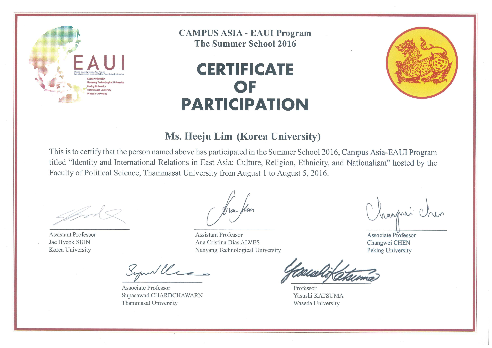
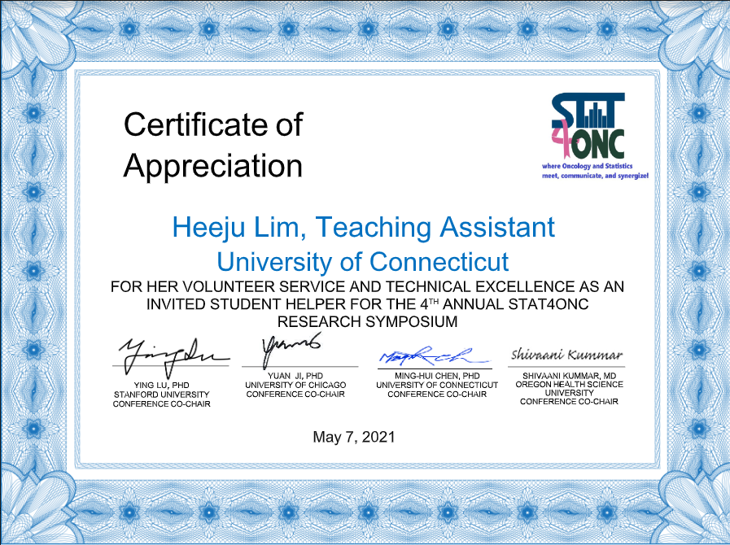

About
Education
Sep. 2019 - Present
an academic leave of absence (Aug. 2021 ~ Aug. 2023)
Advisor : Victor Hugo Lachos
Mar. 2015 - Feb. 2017
Advisor : Yousung Park
Thesis : A study on financial stability through the estimation of child education and childcare budget, workers’ compensation insurance, and employment insurance
Mar. 2010 - Feb. 2015
Advisor : Seungyeon Lee
Awards and Honors
Scholarships for Internationalization, Korea Univ. Spring 2016
Academic Research Scholarships, Korea Univ. Spring 2016, Fall 2015
BK21PLUS Scholarships, Korea Univ. Spring 2016, Fall 2015
Magna Cum Laude, Sejong Univ. Spring 2015
Honors Scholarships, Sejong Univ. 2014, 2013, 2012, 2011

Technical Skills
Advance programming skills of R, SAS, Python and SQL
Advance technical skills of SPSS statistics and SPSS modeler
Moderate programming skills in HTML, C, JAVA
Certificates
SAS Certified Base/Advanced Programmer for SAS 9, JUL 2015
Oracle Database 10g Administrator Certified Professional, SEP 2014
Oracle Database 12c Administrator Certified Professional, JAN 2016